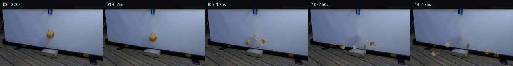

![首帧]()

Round 00
2026-11-05T04:35:40.569930+00:00像素候选变化代码 +299/−0inspection 更新
pixels 9945b7c5f4736762 · code 765f2e595ef174c3
查看本轮 generate.py 真实 diff
--- previous/generate.py
+++ current/generate.py
@@ -0,0 +1,299 @@
+from pathlib import Path
+import hashlib
+
+import cv2
+import numpy as np
+from PIL import Image, ImageDraw, ImageFilter
+
+from artifact_io import save
+
+
+ROOT = Path(__file__).resolve().parent
+W, H = 256, 144
+MUG_BOX = (112, 48, 141, 79) # left, top, right, bottom
+
+
+def source_and_clean_plate():
+ """Extract the photographed mug and reconstruct only its old footprint."""
+ source = np.asarray(Image.open(ROOT / "first_frame.png").convert("RGB"))
+ assert source.shape == (H, W, 3)
+
+ # Conservative silhouette envelope measured from frame 00.
+ envelope = np.zeros((H, W), np.uint8)
+ outline = np.array(
+ [[120, 49], [131, 50], [133, 57], [138, 59], [140, 67],
+ [137, 73], [133, 74], [130, 78], [120, 77], [115, 71],
+ [114, 64], [117, 59], [119, 57]], np.int32)
+ cv2.fillPoly(envelope, [outline], 255)
+
+ # First infer the smooth screen behind the object. Its small footprint is
+ # the only part of the source reconstructed for later frames.
+ clean_bgr = cv2.inpaint(cv2.cvtColor(source, cv2.COLOR_RGB2BGR), envelope, 5,
+ cv2.INPAINT_TELEA)
+ clean = cv2.cvtColor(clean_bgr, cv2.COLOR_BGR2RGB)
+
+ diff = np.max(np.abs(source.astype(np.int16) - clean.astype(np.int16)), axis=2)
+ r, g, b = source.transpose(2, 0, 1)
+ yellow = (r > 75) & (r > g + 12) & (g > b + 12)
+ candidate = (((diff >= 8) | yellow) & (envelope > 0)).astype(np.uint8)
+ candidate = cv2.morphologyEx(candidate, cv2.MORPH_CLOSE,
+ np.ones((3, 3), np.uint8))
+
+ # Keep connected regions that touch the unambiguous yellow ceramic core.
+ n, labels, stats, _ = cv2.connectedComponentsWithStats(candidate, 8)
+ object_mask = np.zeros_like(candidate)
+ for lab in range(1, n):
+ component = labels == lab
+ if np.any(component & yellow) and stats[lab, cv2.CC_STAT_AREA] >= 3:
+ object_mask[component] = 1
+ # One-pixel soft edge retains the photographed antialiasing.
+ alpha = cv2.GaussianBlur(object_mask.astype(np.float32) * 255.0,
+ (3, 3), 0.55)
+ alpha = np.where(object_mask, np.maximum(alpha, 215), alpha)
+ alpha = np.clip(alpha, 0, 255).astype(np.uint8)
+
+ x0, y0, x1, y1 = MUG_BOX
+ mug = np.dstack([source[y0:y1, x0:x1], alpha[y0:y1, x0:x1]])
+
+ # Re-inpaint a tight, slightly dilated version for a clean plate while
+ # preserving all untouched source pixels exactly.
+ removal = cv2.dilate(object_mask, np.ones((5, 5), np.uint8), iterations=1)
+ removal = (removal * 255).astype(np.uint8)
+ plate_bgr = cv2.inpaint(cv2.cvtColor(source, cv2.COLOR_RGB2BGR), removal, 5,
+ cv2.INPAINT_TELEA)
+ plate = cv2.cvtColor(plate_bgr, cv2.COLOR_BGR2RGB)
+ plate[removal == 0] = source[removal == 0]
+ return source, plate, mug, object_mask
+
+
+def rgba_transform(rgba, angle, scale=1.0):
+ image = Image.fromarray(rgba, "RGBA")
+ if scale != 1.0:
+ size = (max(1, round(image.width * scale)),
+ max(1, round(image.height * scale)))
+ image = image.resize(size, Image.Resampling.BICUBIC)
+ return image.rotate(angle, resample=Image.Resampling.BICUBIC, expand=True)
+
+
+def paste_center(frame, layer, center):
+ x = int(round(center[0] - layer.width / 2))
+ y = int(round(center[1] - layer.height / 2))
+ frame.alpha_composite(layer, (x, y))
+
+
+def add_soft_shadow(frame, center, size, opacity):
+ shadow = Image.new("RGBA", (W, H), (0, 0, 0, 0))
+ d = ImageDraw.Draw(shadow)
+ cx, cy = center
… diff truncated; 212 more lines …